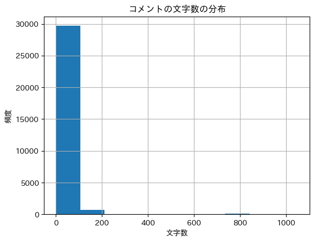
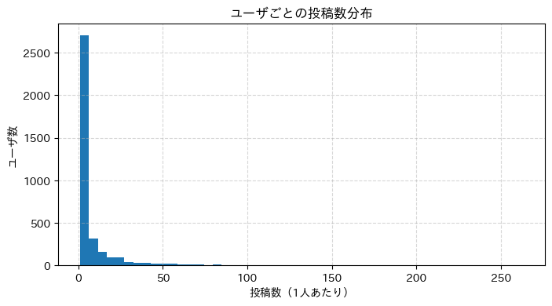
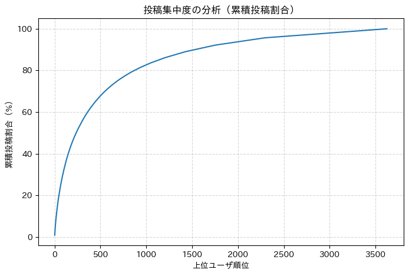
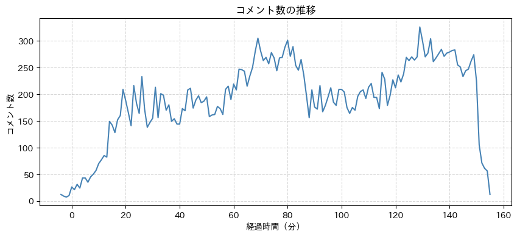
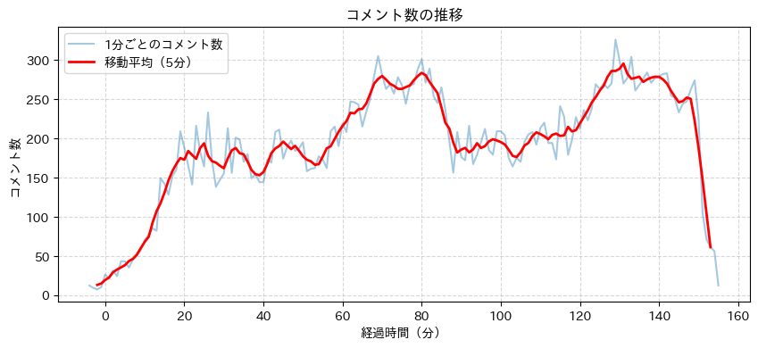
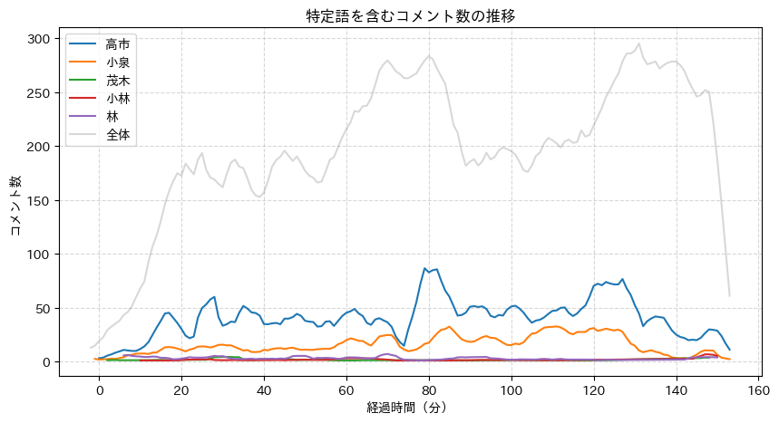
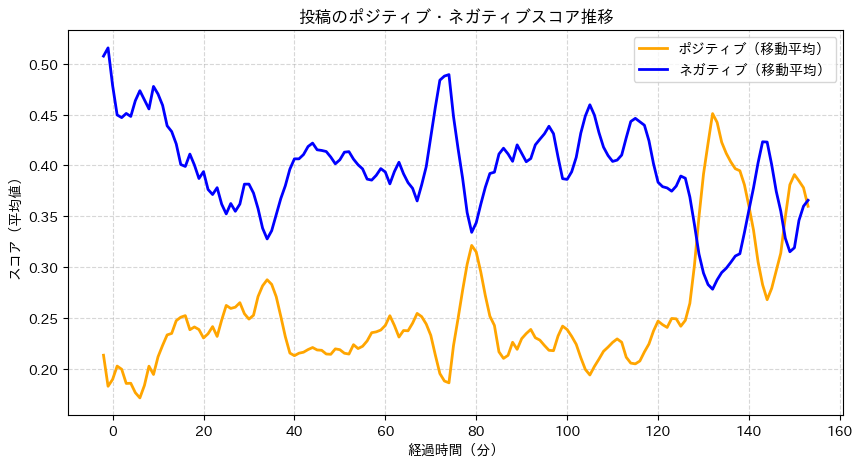
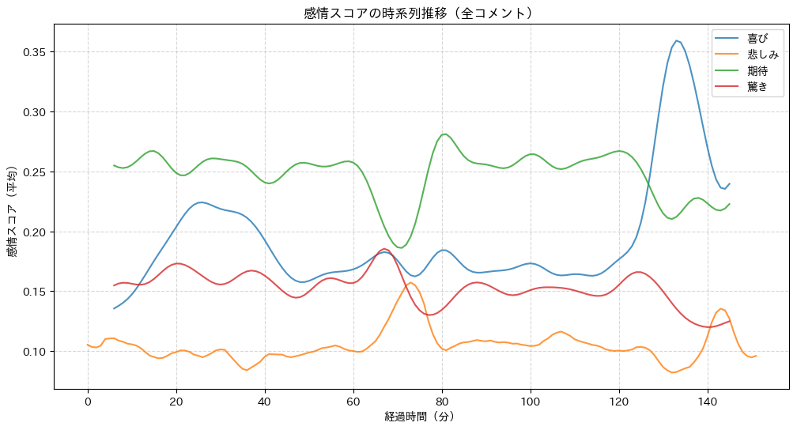

8. ソーシャルメディアデータの分析#
今回のゴール
ソーシャルメディアデータの特徴と分析の意義を理解する
YouTubeのライブチャットのデータを分析し、人々の意見・感情の動きを観察する
演習での実データ分析を通して、時系列分析の理解・応用力、結果を考察する力を身につける
8.1. データの確認#
データはWebClassを参照
8.1.1. データの中身を確認#
youtube_livechat-bVvBEltNXSY.csvを Google Colab に配置データ読み込み
プログラム
import pandas as pd
df = pd.read_csv("youtube_livechat-bVvBEltNXSY.csv", encoding="utf8", parse_dates=["datetime"])
df.head(10)
8.1.2. データの傾向を確認： コメント件数・文字数の分布#
プログラム
df["コメント文字数"] = df["message"].str.len()
# 統計量を個々に表示
print(f"コメント件数：{len(df)} 件")
print(f"コメント文字数（平均値）：{df["コメント文字数"].mean()} 文字")
print(f"コメント文字数（中央値）：{df["コメント文字数"].median()} 文字")
print(f"コメント文字数（最小値）：{df["コメント文字数"].min()} 文字")
print(f"コメント文字数（最大値）：{df["コメント文字数"].max()} 文字")
print()
# 統計量をまとめて取得
print(df["コメント文字数"].describe())
出力
コメント件数：30680 件
コメント文字数（平均値）：22.39049019607843 文字
コメント文字数（中央値）：11.0 文字
コメント文字数（最小値）：1.0 文字
コメント文字数（最大値）：1050.0 文字
count 30600.000000
mean 22.390490
std 54.855716
min 1.000000
25% 7.000000
50% 11.000000
75% 19.000000
max 1050.000000
Name: コメント文字数, dtype: float64
8.1.3. データの傾向を確認： コメント文字数の分布#
プログラム
!pip -q install japanize_matplotlib
import matplotlib.pyplot as plt
import japanize_matplotlib
df["コメント文字数"].hist()
# df["コメント文字数"].hist(bins=[0, 5, 10, 15, 20, 25, 30, 35, 40])
plt.title("コメントの文字数の分布")
plt.xlabel("文字数")
plt.ylabel("頻度")
plt.show()
出力

8.2. チャットの内容分析#
8.2.1. 全コメントでの語の出現頻度（集計）#
プログラム
!pip -q install spacy ginza ja-ginza
import spacy
import pandas as pd
from collections import Counter
from tqdm.auto import tqdm
nlp = spacy.load('ja_ginza')
# コメントデータの読み込み
df = pd.read_csv('youtube_livechat-bVvBEltNXSY.csv', encoding='utf-8', parse_dates=['datetime'])
# サンプリングしたい場合
# df = df.sample(n=1000, random_state=42) # 1000件
# df = df.sample(frac=0.1, random_state=42) # 全体の10%
# 名詞・固有名詞・形容詞
target_pos = ("NOUN", "PROPN", "ADJ")
# ストップワード
stop_words = ["\n"]
# 単語リストを作成
all_terms = []
for text in tqdm(df['message']):
try:
doc = nlp(text)
for token in doc:
if token.pos_ in target_pos and token.lemma_ not in stop_words:
all_terms.append(f"{token.lemma_}({token.pos_})")
except:
continue
# 頻度を集計
counter = Counter(all_terms)
top_words = counter.most_common(20)
top_words
出力
[('高市(PROPN)', 11089),
('さん(NOUN)', 5503),
('小泉(PROPN)', 3916),
('hands(NOUN)', 1884),
('択(NOUN)', 1804),
('clapping(PROPN)', 1750),
('自民党(PROPN)', 1607),
('総理(NOUN)', 1537),
('早苗(PROPN)', 1460),
('ら(NOUN)', 1441),
('日本(PROPN)', 1433),
('日本人(NOUN)', 1356),
('FACE(NOUN)', 1262),
('進次郎(PROPN)', 1244),
('総裁(NOUN)', 1234),
('万歳(NOUN)', 1075),
('ステマ(NOUN)', 1062),
('-(NOUN)', 909),
('民意(NOUN)', 904),
('票(NOUN)', 823)]
8.2.2. 全コメントでのワードクラウド#
プログラム
!apt-get -q -y install fonts-ipaexfont
!pip -q install spacy ginza ja-ginza
# ワードクラウド
import spacy
from collections import Counter
from wordcloud import WordCloud
import matplotlib.pyplot as plt
from matplotlib import font_manager
import pandas as pd
from tqdm.auto import tqdm
nlp = spacy.load("ja_ginza")
df = pd.read_csv('youtube_livechat-bVvBEltNXSY.csv', encoding='utf-8', parse_dates=['datetime'])
# サンプリングしたい場合
# df = df.sample(n=1000, random_state=42) # 1000件
df = df.sample(frac=0.1, random_state=42) # 全体の10%
texts = df["message"].to_list()
# 名詞・固有名詞・形容詞
target_pos = ("NOUN", "PROPN", "ADJ")
# ストップワード
stop_words = ["\n"]
# 単語リストを作成
all_terms = []
for text in tqdm(texts):
try:
# 改行文字（"\n","\r\n"等）を一括で除去。ワードクラウドでは改行文字はエラーとなるため
text = "".join(text.splitlines())
doc = nlp(text)
for token in doc:
if token.pos_ in target_pos and token.lemma_ not in stop_words:
all_terms.append(token.lemma_)
except:
pass
# 頻度を集計
counter = Counter(all_terms)
freq_dict = {}
for term, cnt in counter.items():
freq_dict[term] = cnt
jp_font_path = "/usr/share/fonts/opentype/ipaexfont-gothic/ipaexg.ttf"
# WordCloud の生成
wc = WordCloud(
width=800,
height=400,
background_color="white",
font_path=jp_font_path,
# max_words=100,
random_state=0
)
wc = wc.generate_from_frequencies(freq_dict)
# 表示
plt.imshow(wc, interpolation="bilinear")
plt.axis("off")
plt.tight_layout()
plt.show()
出力
8.2.3. 特定語（候補者名）の出現頻度#
プログラム
import pandas as pd
df = pd.read_csv("youtube_livechat-bVvBEltNXSY.csv", encoding="utf-8", parse_dates=["datetime"])
keywords = ["高市", "小泉", "茂木", "小林", "林"]
for key in keywords:
df_kw = df[df["message"].str.contains(key, na=False)]
print(f"「{key}」を含むコメント数： {len(df_kw)} 件")
出力
「高市」を含むコメント数： 6242 件
「小泉」を含むコメント数： 2395 件
「茂木」を含むコメント数： 126 件
「小林」を含むコメント数： 123 件
「林」を含むコメント数： 464 件
8.2.3.1. ⚠ 単純なキーワード指定を用いた一致による問題点#
「林」を含んだ投稿の抽出
プログラム
df_kw = df[df["message"].str.contains("林", na=False)]
df_kw
8.2.3.2. 改善方法：正規表現を用いた判定#
プログラム
df_kw = df[df["message"].str.contains(r"(?<!小)林", na=False)]
df_kw
8.2.4. 特定語（候補者名）の出現頻度（改良版）#
プログラム
import pandas as pd
df = pd.read_csv("youtube_livechat-bVvBEltNXSY.csv", encoding="utf-8", parse_dates=["datetime"])
keywords = ["高市", "小泉", "茂木", "小林", "林"]
for key in keywords:
if key == "林":
# 「小」が直前にない「林」を抽出
pattern = r"(?<!小)林"
else:
pattern = key
df_kw = df[df["message"].str.contains(pattern, na=False, regex=True)]
print(f"「{key}」を含むコメント数： {len(df_kw)} 件")
8.2.5. 特定語（候補者名）を含んだ投稿のワードクラウド#
プログラム
!apt-get -q -y install fonts-ipaexfont
!pip -q install spacy ginza ja-ginza
# ワードクラウド
import spacy
from collections import Counter
from wordcloud import WordCloud
import matplotlib.pyplot as plt
from matplotlib import font_manager
import pandas as pd
from tqdm.auto import tqdm
nlp = spacy.load("ja_ginza")
df = pd.read_csv('youtube_livechat-bVvBEltNXSY.csv', encoding='utf-8', parse_dates=['datetime'])
keyword = "高市"
df = df[df["message"].str.contains(keyword, na=False)]
# サンプリングしたい場合
# df = df.sample(n=1000, random_state=42) # 1000件
# df = df.sample(frac=0.1, random_state=42) # 全体の10%
texts = df["message"].to_list()
# 名詞・固有名詞・形容詞
target_pos = ("NOUN", "PROPN", "ADJ")
# ストップワード
stop_words = ["\n",keyword]
# 単語リストを作成
all_terms = []
for text in tqdm(texts):
try:
# 改行文字（"\n","\r\n"等）を一括で除去。ワードクラウドでは改行文字はエラーとなるため
text = "".join(text.splitlines())
doc = nlp(text)
for token in doc:
if token.pos_ in target_pos and token.lemma_ not in stop_words:
all_terms.append(token.lemma_)
except:
pass
# 頻度を集計
counter = Counter(all_terms)
freq_dict = {}
for term, cnt in counter.items():
freq_dict[term] = cnt
jp_font_path = "/usr/share/fonts/opentype/ipaexfont-gothic/ipaexg.ttf"
# WordCloud の生成
wc = WordCloud(
width=800,
height=400,
background_color="white",
font_path=jp_font_path,
# max_words=100,
random_state=0
)
wc = wc.generate_from_frequencies(freq_dict)
# 表示
plt.imshow(wc, interpolation="bilinear")
plt.axis("off")
plt.tight_layout()
plt.show()
8.3. ユーザ分析#
8.3.1. 一人あたりの投稿件数の分析#
プログラム
import pandas as pd
import matplotlib.pyplot as plt
import japanize_matplotlib
df = pd.read_csv("youtube_livechat-bVvBEltNXSY.csv", encoding="utf-8", parse_dates=["datetime"])
# 各ユーザの投稿数をカウント
author_counts = df["author"].value_counts()
# 上位10人を表示
print(author_counts.head(10))
# 分布
plt.figure(figsize=(8,4))
plt.hist(author_counts, bins=50)
plt.title("ユーザごとの投稿数分布")
plt.xlabel("投稿数（1人あたり）")
plt.ylabel("ユーザ数")
plt.grid(True, linestyle="--", alpha=0.5)
plt.show()
出力
author
60 263
303 223
863 212
113 210
282 203
10 203
12 183
694 178
6 175
496 160

8.3.2. 投稿数の偏り#
プログラム
# 投稿数を降順に並べ替え
counts_sorted = author_counts.sort_values(ascending=False)
# 累積投稿数と割合
cum_posts = counts_sorted.cumsum()
cum_ratio = cum_posts / cum_posts.max() * 100 # 全投稿に対する割合（%）
# プロット
plt.figure(figsize=(8,5))
plt.plot(range(1, len(cum_ratio)+1), cum_ratio)
plt.title("投稿集中度の分析（累積投稿割合）")
plt.xlabel("上位ユーザ順位")
plt.ylabel("累積投稿割合（%）")
plt.grid(True, linestyle="--", alpha=0.5)
plt.show()
出力

8.3.3. 語彙多様性の低いユーザの発見#
プログラム
import spacy
import pandas as pd
from tqdm.auto import tqdm
# 形態素解析モデル
nlp = spacy.load("ja_ginza")
# コメントデータの読み込み
df = pd.read_csv("youtube_livechat-bVvBEltNXSY.csv", encoding="utf-8", parse_dates=["datetime"])
# サンプリングしたい場合
# df = df.sample(frac=0.1, random_state=42) # 全体の10%
# ユーザごとの語彙多様性を計算
records = []
for author, group in tqdm(df.groupby("author")):
all_text = " ".join(group["message"].dropna().astype(str))
try:
doc = nlp(all_text)
tokens = []
for token in doc:
tokens.append(token.lemma_)
token数 = len(tokens)
type数 = len(set(tokens))
if token数 == 0:
ttr = 0
else:
ttr = type数 / token数
records.append({
"author": author,
"コメント数": len(group),
"総単語数": token数,
"異なり語数": type数,
"TTR": round(ttr, 3)
})
except:
continue
# 結果をDataFrameにまとめる
df_ttr = pd.DataFrame(records)
df_ttr.to_csv("youtube_livechat-bVvBEltNXSY-TTR.csv", index=False, encoding="utf-8-sig")
df_ttr
コメント数が多く、かつTTRが低い（語彙多様性が低い）ユーザの投稿を確認
import pandas as pd
df = pd.read_csv("youtube_livechat-bVvBEltNXSY-TTR.csv", encoding="utf-8")
# TTRの昇順に並び替え
df_ttr = df_ttr.sort_values("TTR", ascending=True)
# コメント数10件以上に限定し、上位10件を表示
df_ttr[df_ttr["コメント数"] > 10].head(10)
指定したユーザ（author）のコメントを表示
df[df["author"] == 123]
8.4. 時系列分析#
8.4.1. コメント数の推移（区間集計）#
プログラム
import pandas as pd
import matplotlib.pyplot as plt
import japanize_matplotlib
# コメントデータの読み込み
df = pd.read_csv("youtube_livechat-bVvBEltNXSY.csv", encoding="utf8")
# elapsedTime を分に変換
def to_minutes(t):
try:
parts = []
for x in str(t).split(":"):
parts.append(int(x))
if len(parts) == 3: # 時:分:秒
return parts[0]*60 + parts[1]
elif len(parts) == 2: # 分:秒
return parts[0]
else:
return 0
except:
return 0
df["elapsed_min"] = df["elapsedTime"].apply(to_minutes)
# 経過時間（分）ごとに集計
counts = df.groupby("elapsed_min").size().reset_index(name="count")
# グラフ描画
plt.figure(figsize=(10,4))
plt.plot(counts["elapsed_min"], counts["count"], color="steelblue")
plt.title("コメント数の推移")
plt.xlabel("経過時間（分）")
plt.ylabel("コメント数")
plt.grid(True, linestyle="--", alpha=0.5)
plt.show()
出力

8.4.2. コメント数の推移（移動平均）#
プログラム
import pandas as pd
import matplotlib.pyplot as plt
import japanize_matplotlib
# データ読み込み
df = pd.read_csv("youtube_livechat-bVvBEltNXSY.csv", encoding="utf-8")
# elapsedTime を分に変換
def to_minutes(t):
try:
parts = []
for x in str(t).split(":"):
parts.append(int(x))
if len(parts) == 3: # 時:分:秒
return parts[0]*60 + parts[1]
elif len(parts) == 2: # 分:秒
return parts[0]
else:
return 0
except:
return 0
df["elapsed_min"] = df["elapsedTime"].apply(to_minutes)
# 経過時間（分）ごとにコメント数を集計
counts = df.groupby("elapsed_min").size().reset_index(name="count")
# 移動平均（5分）
counts["smooth"] = counts["count"].rolling(window=5, center=True).mean()
# プロット
plt.figure(figsize=(10,4))
plt.plot(counts["elapsed_min"], counts["count"], label="1分ごとのコメント数", alpha=0.4)
plt.plot(counts["elapsed_min"], counts["smooth"], label="移動平均（5分）", color="red", linewidth=2)
plt.title("コメント数の推移")
plt.xlabel("経過時間（分）")
plt.ylabel("コメント数")
plt.legend()
plt.grid(True, linestyle="--", alpha=0.5)
plt.show()
出力

8.4.3. 盛り上がったシーン（特定語：候補者名）#
プログラム
import pandas as pd
import matplotlib.pyplot as plt
import japanize_matplotlib
import re
# データ読み込み
df = pd.read_csv("youtube_livechat-bVvBEltNXSY.csv", encoding="utf-8")
# elapsedTime を分に変換
def to_minutes(t):
try:
parts = []
for x in str(t).split(":"):
parts.append(int(x))
if len(parts) == 3: # 時:分:秒
return parts[0]*60 + parts[1]
elif len(parts) == 2: # 分:秒
return parts[0]
else:
return 0
except:
return 0
df["elapsed_min"] = df["elapsedTime"].apply(to_minutes)
# キーワード
keywords = ["高市", "小泉", "茂木", "小林", "林"]
# プロット設定
plt.figure(figsize=(10,5))
for key in keywords:
# 「林」は「小林」を除外（正規表現：否定の後読み）
if key == "林":
pattern = r"(?<!小)林"
else:
pattern = re.escape(key)
# キーワードを含むコメント抽出
df_kw = df[df["message"].fillna("").str.contains(pattern, regex=True)]
# 経過時間（分）ごとに集計
counts_kw = df_kw.groupby("elapsed_min").size().reset_index(name="count")
# 移動平均（5分ウィンドウ）
counts_kw["smooth"] = counts_kw["count"].rolling(window=5, center=True).mean()
# プロット
plt.plot(counts_kw["elapsed_min"], counts_kw["smooth"], label=key)
# 全体のコメント数を背景に追加
counts_all = df.groupby("elapsed_min").size().reset_index(name="count")
counts_all["smooth"] = counts_all["count"].rolling(window=5, center=True).mean()
plt.plot(counts_all["elapsed_min"], counts_all["smooth"], color="gray", alpha=0.3, label="全体")
# グラフ設定
plt.title("特定語を含むコメント数の推移")
plt.xlabel("経過時間（分）")
plt.ylabel("コメント数")
plt.legend()
plt.grid(True, linestyle="--", alpha=0.5)
plt.show()
出力

8.4.4. 投稿コメントのポジネガ#
!pip install -q transformers sentencepiece -U torch torchvision torchaudio
プログラム
import pandas as pd
from transformers import AutoTokenizer, AutoModelForSequenceClassification, TextClassificationPipeline
from tqdm.auto import tqdm
# モデルの読み込み
model_id = "cardiffnlp/twitter-xlm-roberta-base-sentiment"
tok = AutoTokenizer.from_pretrained(model_id)
mdl = AutoModelForSequenceClassification.from_pretrained(model_id)
# パイプライン作成
pipe = TextClassificationPipeline(
task="sentiment-analysis",
tokenizer=tok,
model=mdl,
top_k=None,
truncation=True,
max_length=512
)
df = pd.read_csv("youtube_livechat-bVvBEltNXSY.csv", encoding="utf8", parse_dates=["datetime"])
# df = df.sample(n=1000, random_state=42) # 1000件のサンプリング
# df = df.sample(frac=0.1, random_state=42) # 全体の10%のサンプリング
results = []
for i in tqdm(range(len(df))):
message = df.iloc[i]["message"]
try:
res = pipe(message)[0]
record = df.iloc[i].to_dict()
# 感情スコアを追加
for r in res:
record[r["label"]] = float(r["score"])
results.append(record)
except:
pass
# DataFrame化、CSV出力
df_pn = pd.DataFrame(results)
df_pn.to_csv("youtube_livechat-bVvBEltNXSY-pn.csv", index=False, encoding="utf-8-sig")
import pandas as pd
df_pn = pd.read_csv("youtube_livechat-bVvBEltNXSY-pn.csv", encoding="utf8", parse_dates=["datetime"])
print(f"positive: {df_pn["positive"].mean():.3f}")
print(f"negative: {df_pn["negative"].mean():.3f}")
出力
positive: 0.264
negative: 0.387
8.4.5. 投稿コメントのポジネガ（候補者ごと）#
プログラム
import pandas as pd
df = pd.read_csv("youtube_livechat-bVvBEltNXSY-pn.csv", encoding="utf-8", parse_dates=["datetime"])
keywords = ["高市", "小泉", "茂木", "小林", "林"]
for key in keywords:
if key == "林":
pattern = r"(?<!小)林"
else:
pattern = key
df_pn = df[df["message"].fillna("").str.contains(pattern, regex=True)]
print(f"「{key}」投稿のポジティブ｜ネガティブ： {df_pn["positive"].mean():.3f}｜{df_pn["negative"].mean():.3f} (投稿 {len(df_pn)} 件)")
出力
「高市」投稿のポジティブ｜ネガティブ： 0.331｜0.272 (投稿 6242 件)
「小泉」投稿のポジティブ｜ネガティブ： 0.203｜0.492 (投稿 2395 件)
「茂木」投稿のポジティブ｜ネガティブ： 0.322｜0.265 (投稿 126 件)
「小林」投稿のポジティブ｜ネガティブ： 0.372｜0.253 (投稿 123 件)
「林」投稿のポジティブ｜ネガティブ： 0.231｜0.365 (投稿 357 件)
8.4.6. ポジネガ推移#
プログラム
import pandas as pd
import matplotlib.pyplot as plt
import japanize_matplotlib
# データ読み込み
df_pn = pd.read_csv("youtube_livechat-bVvBEltNXSY-pn.csv", encoding="utf8", parse_dates=["datetime"])
# elapsedTime を分に変換
def to_minutes(t):
try:
parts = []
for x in str(t).split(":"):
parts.append(int(x))
if len(parts) == 3: # 時:分:秒
return parts[0]*60 + parts[1]
elif len(parts) == 2: # 分:秒
return parts[0]
else:
return 0
except:
return 0
df_pn["elapsed_min"] = df_pn["elapsedTime"].apply(to_minutes)
# 時間ごとに平均スコアを集計
df_time = (
df_pn.groupby("elapsed_min")[["positive", "negative"]]
.mean()
.reset_index()
.sort_values("elapsed_min")
)
# 移動平均で平滑化（5分ウィンドウ）
df_time["pos_smooth"] = df_time["positive"].rolling(window=5, center=True).mean()
df_time["neg_smooth"] = df_time["negative"].rolling(window=5, center=True).mean()
# グラフ描画
plt.figure(figsize=(10,5))
plt.plot(df_time["elapsed_min"], df_time["pos_smooth"], label="ポジティブ（移動平均）", color="orange", linewidth=2)
plt.plot(df_time["elapsed_min"], df_time["neg_smooth"], label="ネガティブ（移動平均）", color="blue", linewidth=2)
plt.title("投稿のポジティブ・ネガティブスコア推移")
plt.xlabel("経過時間（分）")
plt.ylabel("スコア（平均値）")
plt.legend()
plt.grid(True, linestyle="--", alpha=0.5)
plt.show()
出力

8.4.7. 投稿コメントの感情#
!pip install torch==2.8.0 torchvision==0.23.0 torchaudio==2.8.0 --quiet
!pip install transformers sentencepiece fugashi unidic-lite pandas==2.2.2 --quiet
プログラム
import pandas as pd
# データ読み込み
df_emo = pd.read_csv("youtube_livechat-bVvBEltNXSY-emo.csv", encoding="utf8", parse_dates=["datetime"])
# 感情ラベル
emo_labels = ["喜び", "悲しみ", "期待", "驚き", "怒り", "恐れ", "嫌悪", "信頼"]
# 結果表示
print("感情スコア平均値（全コメント）")
for emo in emo_labels:
print(f"{emo}: {df_emo[emo].mean():.3f}")
出力
感情スコア平均値（全コメント）
喜び: 0.204
悲しみ: 0.106
期待: 0.245
驚き: 0.151
怒り: 0.064
恐れ: 0.058
嫌悪: 0.097
信頼: 0.064
8.4.8. 投稿コメントの感情（時系列推移）#
プログラム
import pandas as pd
import matplotlib.pyplot as plt
import japanize_matplotlib
df_emo = pd.read_csv("youtube_livechat-bVvBEltNXSY-emo.csv", encoding="utf8")
# 感情ラベル
# emo_labels = ["喜び", "悲しみ", "期待", "驚き", "怒り", "恐れ", "嫌悪", "信頼"]
emo_labels = ["喜び", "悲しみ", "期待", "驚き"]
# elapsedTime を分に変換
def to_minutes(t):
try:
parts = []
for x in str(t).split(":"):
parts.append(int(x))
if len(parts) == 3: # 時:分:秒
return parts[0]*60 + parts[1]
elif len(parts) == 2: # 分:秒
return parts[0]
else:
return 0
except:
return 0
df_emo["elapsed_min"] = df_emo["elapsedTime"].apply(to_minutes)
# 5分ごとの平均スコアを算出
df_grouped[emo_labels] = df_grouped[emo_labels].rolling(window=5, center=True).mean()
# グラフ描画
plt.figure(figsize=(12,6))
for emo in emo_labels:
plt.plot(df_grouped["elapsed_min"], df_grouped[emo], label=emo, alpha=0.8)
plt.title("感情スコアの時系列推移（全コメント）")
plt.xlabel("経過時間（分）")
plt.ylabel("感情スコア（平均）")
plt.legend()
plt.grid(True, linestyle="--", alpha=0.5)
plt.show()
出力

8.5. YouTubeライブチャットデータの取得#
ライブラリのインストール
!pip -q install pytchat
プログラム
import pytchat
import pandas as pd
from tqdm.auto import tqdm
# 設定
VIDEO_ID = "bVvBEltNXSY" # https://www.youtube.com/watch?v=bVvBEltNXSY
SAVE_FILE = f"youtube_livechat-{VIDEO_ID}.csv"
MAX_COMMENTS = 100 # 取得上限
# MAX_COMMENTS = 1000000 # 取得上限
chat = pytchat.create(video_id=VIDEO_ID, interruptable=False)
chat.tick_speed = 0
rows = []
pbar = tqdm(desc="チャット取得中", unit="件")
# チャット取得
while chat.is_alive():
for c in chat.get().sync_items():
rows.append({
"datetime": c.datetime, # 投稿日時
"elapsedTime": c.elapsedTime, # 経過時間
"author": c.author.name, # 投稿者名
"message": c.message, # コメント
"amountString": c.amountString, # スーパーチャット（あれば）
})
pbar.update(1)
if len(rows) >= MAX_COMMENTS:
chat.terminate()
break
pbar.close()
# CSV保存
df = pd.DataFrame(rows)
df["author"] = pd.factorize(df["author"])[0] + 1 # 投稿者名のマスク（ID化）
df.to_csv(SAVE_FILE, index=False, encoding="utf-8-sig")